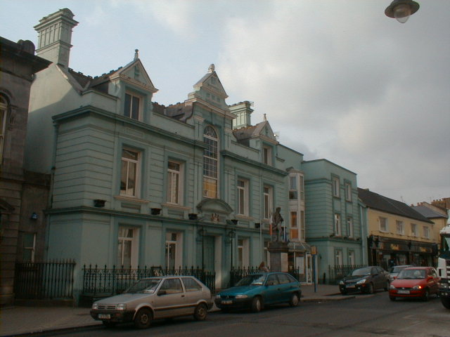
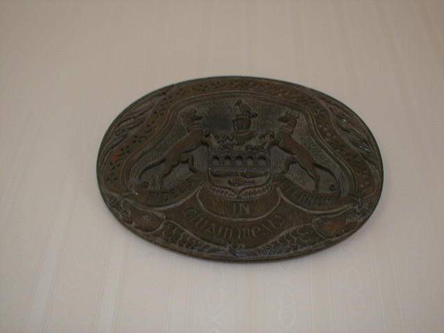
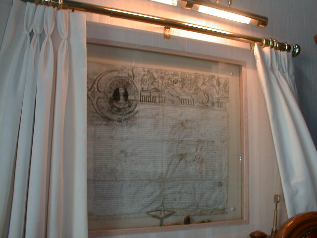
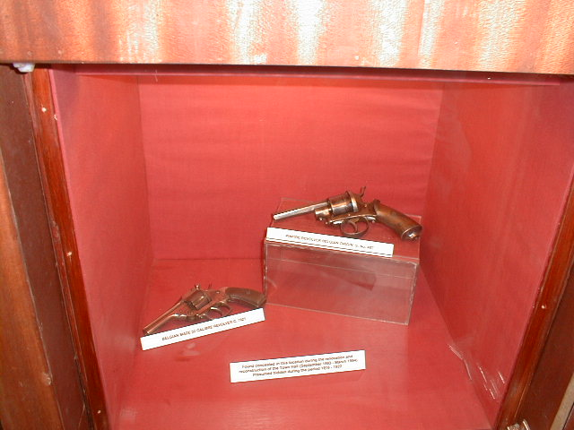

Town Hall
-Coat of Arms
This 17th Century Building began its life as the private mansion of a local timber merchant by the name of Richard Hamerton. The building became an Inn in later years known as the "Global Inn". It was rebuilt in 1881 as the Town Hall under Alderman Edward Cantwell, Mayor and now contains the Municipal Offices and Council Chambers of the Clonmel Corporation.

The Council Chambers of the Town Hall house 2 important Histrical Documents. On the left hand side of the Mayoral chair are the documents given by Charles 2nd to the Town of Clonmel bestowing a grant to reconstruct the town in 1654, four years after the attack of Cromwell.

To the right of the cahir are documents incorporating the powers of the corporation, were recieved by King William 2nd. The original documents were given to the town in 1600 and lost the ones we see are replacements given by the King in 1697.

In 1992 while the Town Hall was under renovations, two guns was found in the walls. It is not clear where they originated but it is believed that they was hidden there during the 1916 rising. The Guns are displayed in a glass hidden in the walls of the Chamber of Commerce
